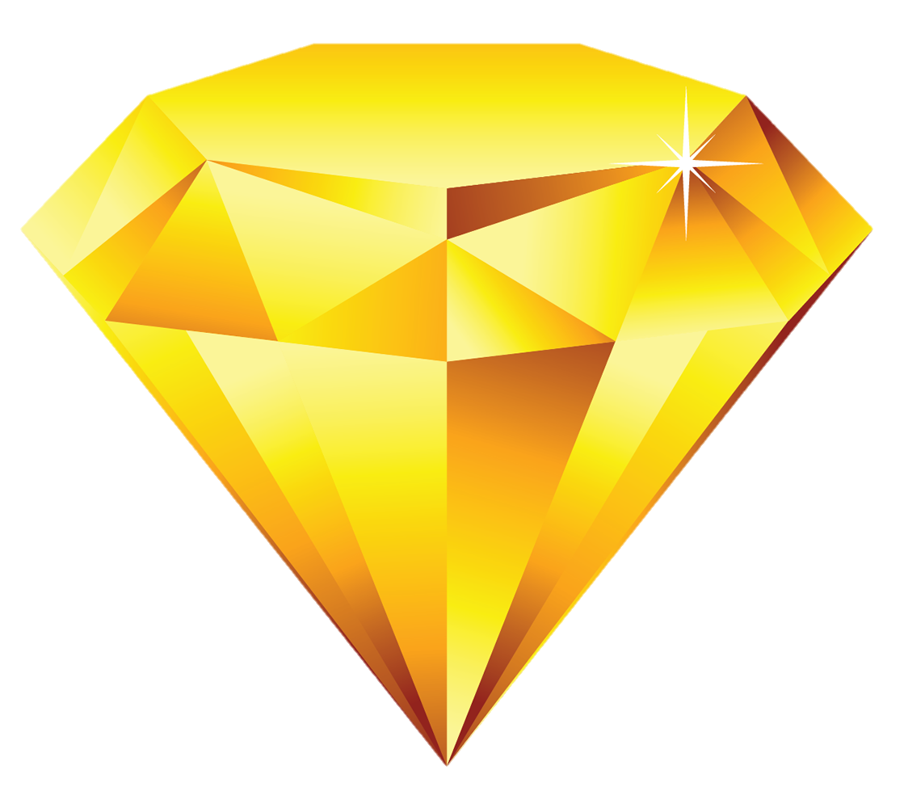

Hazard possiede la versione moderna delle comuni meccaniche dei giochi del suo genere, più un insieme di novità che renderanno le partite sempre più competitive piene di suspance, colpi di scena e strategie uniche e imprevedibili ai più. Ecco alcune informazioni sulle meccaniche uniche di Hazard che ti faranno giocare ad un livello ancora mai sperimentato.
Per caso sei a corto di fortuna? C'è qualcuno al tavolo che ritieni ne abbia troppa? Per entrambi i problemi usa i token fortuna e prova così a manipolarla.
Fai concorrenza agli altri giocatori, provando a indebolire o togliere le loro proprietà, ma attento a non sbagliare o sarai tu a perdere ciò che volevi togliere.
Costruisci e potenzia attività sul tabellone di gioco, per creare un impero; stai in guardia però a non andare in rosso, o pagherai più di quanto potevi guadagnare.
Esistono 120 gemme sparse per Hazard, usale per attivare effetti micidiali che porteranno la tua strategia alla vittoria.
